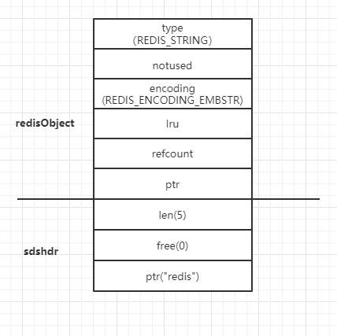
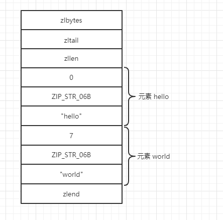

实际开发的场景中，尤其是涉及到高并发的应用，关系型数据库常常无法满足业务需求，这时候从问题出发，尝试用redis这个基于内存的数据库，通常会因为它带来的几十倍甚至上百倍的性能使得问题迎刃而解。虽然满足了需求，但是redis性能还有没有提升的空间？在有限的资源内是不是已经把它的性能“榨干”？在这些问题之前，首先要明白redis在所使用的机器上到底能跑多快。
性能
redis的性能测试是通过benchmark命令执行的，格式为：redis-benchmark [option <value>]，例如：redis-benchmark -c 1 -q，常用命令参数如下表
| option选项 | 描述 | 默认值 |
|---|---|---|
-h <hostname> |
服务端地址 | 127.0.01 |
-p <port> |
服务端口 | 6379 |
-s <socket> |
服务端socket | |
-a <password> |
密码 | |
-c <clients> |
并发连接 | 50 |
-n <requests> |
请求数 | 100000 |
-d <size> |
以字节形式指定set/get值的大小 | 2 |
--dbnum <db> |
选择数据库 | 0 |
-k <boolean> |
1=keep alive 0=reconnect | 1 |
-r <keyspacelen> |
set/get/INCR使用随机 key, SADD 使用随机值 |
|
-p <numreq> |
使用管道方式发送请求 | |
-q |
退出redis，仅显示query/sec值 | |
--csv |
以csv格式输出 | |
-1 |
循环，不中断测试 | |
-t <tests> |
仅运行\<tests>中以逗号分隔的命令 | |
-I |
Idle 模式。仅打开 N 个 idle 连接并等待 |
单机，CPU:i5-2430M@2.40GHz，内存8GB，cygwin虚拟环境，单客户端，请求数10000，测试结果如下：
因为笔记本配置不高，又是在虚拟环境下，所以非管道方式下的测试数据显得性能一般，改为管道模式再测试一次
以上两组结果展示了一些常用redis命令在1秒内可以执行的次数，如果redis-benchmark不带任何参数，将默认使用50个客户端来进行性能测试。从以上运行结果可见在管道模式下，redis性能是非管道模式下的十几倍甚至几十倍以上，但是这些结果并不代表实际性能，因为这个测试程序只负责测试命令本身的执行，并不处理返回的结果。当发现客户端的实际性能和测试结果差距较大时，可能的原因有：
- 没有使用管道模式
- redis的每个/每组命令都创建了新的连接
第一个问题好解决，使用pipeline即可。第二个问题要如何解决呢？首先了解一下redis客户端与服务端的交互方式。客户端向redis服务端发送命令前，首先要建立连接，redis的服务端和客户端一般都不在一台物理机上，因此需要通过底层的网络通讯建立连接，假设一次交互从请求到响应结束共耗时10ms，redis的性能很高，只用了1ms将数据处理完毕，网络传输和建立连接耗时9ms，在高并发场景下，大量的时间都消耗在网络传输和建立连接上，之前提到的管道模型可以解决频繁网络传输的问题，那么如何解决频繁连接的问题？redis的连接池就是为了这个场景而设计的。redis的连接池在客户端建立多个连接而不释放，当需要连接服务端的时候，从池中取出连接，处理完毕后将连接归还池中重用，就避免了反复建立连接的时间消耗，也保证在多线程环境下的安全。常用开发语言的客户端都有连接池的实现。
内存优化
计算机发展到今天，内存依然是很宝贵的资源，价格也居高不下（屯内存发家致富。。。），redis是基于内存的数据库，所有的数据都存储在内存中，所以如何优化内存，减少空间占用是一个非常重要的话题。
精简、规范的key名和value
这是最直接的减少内存占用的方式，如very.important.person:20可以改为vip:20，但是不建议写成v:20，精简的原则是保证可读性和易维护性以及尽量避免冲突。比如存储性别的key的值是male和female，可以优化为0和1来表示。
内部编码优化
如果靠精简key和value不足以满足减少空间的需求，这时候就要根据redis的内部编码方式来节省更多的空间。redis为每种数据类型都提供了两种编码方式（字符串类型的embstr编码是3.0版加入的，列表类型的quicklist编码是3.2版加入的，在此暂不介绍了）,以散列为例，散列是通过hashTable实现的，查找、赋值的时间复杂度是O(1)，如果散列中的元素很少，O(1)的性能和O(n)比没有绝对优势，这种情况下redis会采用一种更紧凑，更节约空间的编码方式zipList实现。当散列的数据增多，编码方式会自动转为hashTable（这个转换过程是透明的，由redis内部自动完成），查看一个key的编码方式，可以使用object encoding命令
redis的底层存储模型都是一个redisObject，它的结构如下：
1 | typedef struct redisObject { |
其中type字段表示的是key的数据类型，取值如下：
1 |
encoding字段表示的就是编码方式，取值如下：
1 |
各数据类型的编码方式、满足条件和执行object encoding命令后的结果
字符串
redis使用sdshdr类型变量来存储字符串，上文提到的redisObject的ptr属性指向该变量的地址。sdshdr的结构如下：
1 | struct sdshdr { |
当value时字符串且长度大于39时，例如：set key "hello world,hello world,hello world,hello world"，redis将以raw编码方式存储，如图
当value是非整型字符串时且长度小于39时，例如：set key redis，redis将以embstr编码方式存储，如图

与raw的差异是，embstr编码方式的sdshdr是与redisObject在连续的内存空间中。
当value可以用64位的有符号整数表示时，redis会转换成long类型并以int编码方式存储。例如：set key 123

redisObject结构中的refcount字段存储的是value被引用的数量，在这种结构中，value可以被多个key引用。redis会预先存储0到9999这些数字的redisObject对象，如果set的key在这10000个数字内，可以直接引用已经创建的对象，而不是重新建一个（有点像Java的常量池），这种共享方式能够节约一定的存储空间。
散列
散列的编码方式有两种：hashtable和ziplist，在配置文件中可以定义使用ziplist的条件：
1 | hash-max-ziplist-entries 512 |
当散列的字段个数小于hash-max-ziplist-entries且每个字段和字段值的长度都小于hash-max-ziplist-value时，使用ziplist编码存储，否则用hashtable。ziplist编码是一种紧凑型的编码格式，它以时间换空间的方式提高存储空间的利用率，适合在散列字段较少时使用。ziplist的内存结构如下：
zlbytes是uint32_t类型，表示占用空间，长度为4字节，zltail也是uint32_t类型，长度为4字节，表示到最后一个元素的偏移量，记录zltail可以使程序直接定位到尾部元素而无需遍历整个结构。zllen是unit16_t类型，存储的是元素的数量，长度是2字节，zlend用来标记结构的末尾，值是255，长度1字节。
ziplist的每个元素由4个部分组成，第一部分用来存储前一个元素的大小以实现倒序查找，当前一个元素的大小<254字节时，第一个部分占用1字节，否则占用5字节。第二、三部分分别表示元素的编码类型和元素大小，当元素大小<=63字节，元素编码类型是ZIP_STR_06B（0<<6），同时第三个部分用6个二进制位来记录元素的长度，所以第二、三部门总占用1字节。当63字节<元素<=16383字节时，元素编码类型是ZIP_STR_14B，总占用2字节，当元素>16383时，元素编码为ZIP_STR_32B占用5字节。第四部分就是元素的存储内容，reids在多种编码方式中，都会将可以转为数字类型的字符以数字来存储，此时第二、三个部分来表示数字的类型（此时的编码方式为ZIP_INT_16B、ZIP_INT_32B等）。当执行命令hset hello world时，内存结构如图：

从结构上来看，ziplist比hashtable节省了前驱指针和后驱指针的空间，数据是连续的，具有清晰的边界，在遍历ziplist时，每次查找会跳过一个元素确保只查找字段名，找到后取下一个元素就是字段值，因此在元素个数不多时，这个性能还是可以接受的。
列表
列表的编码方式也有两种，分别为linkedlist和ziplist，linkedlist是一种非常常见的数据结构，每个Node有一个prev指针和next指针组成双端链表。ziplist上面已经介绍过了，就不再说明了。配置文件中可以定义使用ziplist的条件：
1 | list-max-ziplist-entries 512 |
当列表的元素个数少于512且所有元素都小于64字节时，使用ziplist编码存储。redis3.2版新增了quicklist编码方式，这个编码方式可以看作是linkedlist和ziplist的结合，其原理是将长linkedlist分成若干个以链表形式组成的ziplist，即发挥了ziplist编码减少空间的优势，又具有linkedlist编码的性能。
集合
集合的编码方式也是两种，分别为hashtable和intset，配置文件中可以定义使用intset的条件：
1 | set-max-intset-entries 512 |
除了元素个数小于配置的值外，还必须满足所有元素都是整数。intset编码结构的定义为：
1 | typedef struct intset{ |
intset的数据结构由三部分构成，encoding编码方式，length元素个数，contents元素内容数组。虽然contents声明为int8_t，但是实际类型还是取决于encoding的值，encoding的取值有以下三种：
1 | INTSET_ENC_INT16 |
默认的encoding是INTSET_ENC_INT16（2字节），当新插入的元素大于2字节时，集合的encoding会升级为INTSET_ENC_INT32（4字节）并调整元素的位置和长度，如果还无法满足，将升级为INTSET_ENC_INT64（8字节）。intset编码方式是有序的存储元素，因此无论是插入还是删除元素，都要调整元素后面的位置，当元素太多时，性能很差。当新增的元素不是整数或个数超过了配置的参数值，redis将集合的编码方式自动转换为hashtable（这种转换时不可逆的，即使删除了非整数元素或将个数减少到范围内，也无法改变编码方式，假如这么做了，就需要重新遍历集合的所有元素，时间复杂度为O(n)）。
有序集合
有序集合的编码方式可能是skiplist和ziplist，同样可以在配置文件中定义使用ziplist的条件：
1 | zset-max-ziplist-entries 128 |
使用条件与散列、列表的ziplist一样，这里主要介绍skiplist。先看看skiplist的定义：
1 | typedef struct zskiplist { |
跳表包含4个属性：header、tail、length和level，其中header和tail都是由zskiplistNode（后面简称Node），node中保存元素的redisObject。以header为例，
可以看出跳表的数据由多个层级组成，每个层级间隔保存了链表的节点数据，这样的优点是查找效率类似二分查找法，比如要查找score = 86这个节点，查找过程如下
整个过程只比较了三次（横向箭头比较，竖向箭头不比较），比普通链表从头开始遍历节省了时间，缺点也很明显，浪费了空间。跳表在有序集合中元素个数很大的情况下，查询效率可以媲美二分法，但是对内存的浪费也很明显。